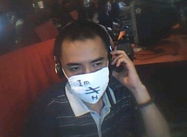

四川五子棋棋手的曾经和现在[图]
#1 四川五子棋棋手的曾经和现在[图]作者：五林外传 发表时间：2009-4-25 12:17:21

后排：仙人、深蓝、失落缘、动感、熊猫
前排：魂、教父、难过、画眉、仙度、？？
2005年CEG五子棋比赛
失落缘、小白未参加最后的比赛，所以难过第一、教父第二、熊猫第三
后排：任继航.王昊天&女友.王治国.王俊.朱健敏
中排：巫文科.聂淼.王晓辉.李心鹏.邓涛.王译
前排：温昊.陈新.兰志仁.林勇
四川省首届五子棋公开赛
第 1名 李心鹏 （难过）
第 2名 兰志仁 （魂）
第 3名 黄圣明 （小白）
第 4名 任继航 （水）
第 5名 聂淼 （教父、蜀锦、潇洒）
第 6名 王昊天 （天天）
第 7名 邓涛 （东门少帅）
第 8名 杨柳
第 9名 王晓辉 （火云）
第10名 陈新 （风尘）
第11名 王译 （色狼）
第12名 解村
第13名 于亚君
第14名 朱健敏 （小刀）
第15名 王治国 （儒釋道）
第16名 王骏
第17名 刘思源
第18名 陈茂
第19名 温昊 （熊猫）
第20名 黄思龙
第21名 王鹏
第22名 林勇
第23名 贺强
第24名 韩煜
第25名 罗晨翔
第26名 蒋新民
第27名 林雨婷
第28名 贺于阳
第29名 陈祖全
第30名 李燕琪
第31名 刘洺琛
第32名 曾学澄
第33名 张礼耀
第34名 陈杰
第35名 何佳栗
第36名 赵健
第37名 窦含怡
第38名 汪珉尧
［ 无尽 于 2009-4-26 14:14:43 时奖励此帖[金币加 20 威望加1］
［ 岑小鱼 于 2011-7-6 20:43:27 时花20金币送鲜花一朵］
#2 Re:四川五子棋棋手的曾经和现在[图]作者：浩瀚铭剑 发表时间：2009-4-25 12:22:30
 浩瀚棋社加油 四川雄起
浩瀚棋社加油 四川雄起
#3 Re:四川五子棋棋手的曾经和现在[图]作者：nara 发表时间：2009-4-25 12:27:00
楼主第2张图片没显示，请修复下！#4 Re:四川五子棋棋手的曾经和现在[图]作者：潇洒 发表时间：2009-4-25 12:32:38
 有美女噢
有美女噢#5 Re:四川五子棋棋手的曾经和现在[图]作者：浩瀚铭剑 发表时间：2009-4-25 12:33:12
 四川美女一大把
四川美女一大把#6 Re:四川五子棋棋手的曾经和现在[图]作者：潇洒 发表时间：2009-4-25 12:35:46
 那只有等智运会去四川玩玩了
那只有等智运会去四川玩玩了#7 Re:四川五子棋棋手的曾经和现在[图]作者：浩瀚铭剑 发表时间：2009-4-25 12:37:52
潇洒大哥来成都了我请你看MM 站在天桥上面随便打望#8 Re:四川五子棋棋手的曾经和现在[图]作者：nara 发表时间：2009-4-25 12:48:55
仙度和画眉都很漂亮的啊！哈哈
不知仙度是哪位？也是实战棋手吗？
#9 Re:四川五子棋棋手的曾经和现在[图]作者：潇洒 发表时间：2009-4-25 12:55:29
铭剑 好就这么定了
#10 Re:四川五子棋棋手的曾经和现在[图]作者：南姑钉子户 发表时间：2009-4-26 1:11:34
变化还是多大的 熊猫毛少多了
#11 Re:四川五子棋棋手的曾经和现在[图]作者：忧郁的双眼 发表时间：2009-4-26 16:33:32
咋我天宇哥不进去亮个相？#12 Re:Re:四川五子棋棋手的曾经和现在[图]作者：五林外传 发表时间：2009-4-26 16:41:16
巫文科就是啊［ 忧郁的双眼 于 2009-4-26 18:38:49 时花20金币送鲜花一朵］
#13 Re:四川五子棋棋手的曾经和现在[图]作者：花月痕 发表时间：2009-4-29 16:21:25
五林外传是哪个白痴?居然把我的照片给弄上来了,快点来自首,不然我要告你侵犯偶的肖像权#14 Re:四川五子棋棋手的曾经和现在[图]作者：杰 发表时间：2009-4-29 19:08:06
楼上的我好像认识，有印象#15 Re:四川五子棋棋手的曾经和现在[图]作者：形 发表时间：2009-5-3 9:53:59
仙度，画眉，标准红花啊
原来魂是四川的啊
#16 Re:四川五子棋棋手的曾经和现在[图]作者：五林外传 发表时间：2009-5-3 15:33:40
|
你谁呀，不知道你是哪位怎么对号入座，又怎么能有肖像权？
#17 Re:四川五子棋棋手的曾经和现在[图]作者：nara 发表时间：2009-5-3 18:57:06
花月痕是画眉吧！
#18 Re:Re:四川五子棋棋手的曾经和现在[图]作者：花月痕 发表时间：2009-5-3 23:41:17
引用：
原文由 南姑钉子户 发表于 2009-4-26 1:11:34 :
变化还是多大的 熊猫毛少多了
精辟#19 Re:四川五子棋棋手的曾经和现在[图]作者：浩瀚铭剑 发表时间：2009-5-3 23:51:23
#20 Re:四川五子棋棋手的曾经和现在[图]作者：南姑钉子户 发表时间：2009-5-29 1:24:33

#21 Re:四川五子棋棋手的曾经和现在[图]作者：炫飞冰弦 发表时间：2009-5-31 15:22:22
- - 祝福四川五子棋
#22 Re:四川五子棋棋手的曾经和现在[图]作者：不知 发表时间：2009-5-31 15:58:21
有PLMM#23 Re:四川五子棋棋手的曾经和现在[图]作者：浩瀚铭剑 发表时间：2009-5-31 17:15:26
钉哥咋把风多多的这张照片发来了哟 经典#24 Re:四川五子棋棋手的曾经和现在[图]作者：南姑钉子户 发表时间：2009-6-1 0:12:55
越南将军换成日本忍者将军老
#25 Re:四川五子棋棋手的曾经和现在[图]作者：极地剑客 发表时间：2009-7-1 5:58:05
强烈要求曝光楼上照片~~~~~~~~
#26 Re:Re:四川五子棋棋手的曾经和现在[图]作者：茗弈小刀 发表时间：2009-7-1 11:17:38
引用：仙度是小白的女朋友，你就表想了，一边去哈。
原文由 nara 发表于 2009-4-25 12:48:55 :仙度和画眉都很漂亮的啊！哈哈
不知仙度是哪位？也是实战棋手吗？
#27 Re:四川五子棋棋手的曾经和现在[图]作者：路痴 发表时间：2009-7-1 19:52:00
赞楼上的消息 哈哈~#28 Re:四川五子棋棋手的曾经和现在[图]作者：偶尔的疯狂 发表时间：2009-7-3 21:49:32
都很帅，都很美
#29 Re:四川五子棋棋手的曾经和现在[图]作者：浩瀚铭剑 发表时间：2009-7-8 10:15:52
 难道你不知道四川帅哥美女多啊
难道你不知道四川帅哥美女多啊#30 Re:四川五子棋棋手的曾经和现在[图]作者：虚无 发表时间：2011-7-5 17:29:02
挖一下坟。。。
#31 Re:四川五子棋棋手的曾经和现在[图]作者：岑小鱼 发表时间：2011-7-6 20:44:18
巫文科.....看起来跟 巫启贤有点像哈哈#32 Re:四川五子棋棋手的曾经和现在[图]作者：隐藏菜系 发表时间：2011-7-7 7:45:10
我记得王昊天有一年全国赛进前八了，后来再也没见过他比赛的消息了#33 Re:四川五子棋棋手的曾经和现在[图]作者：dyccj 发表时间：2011-8-27 15:44:15
人才济济啊
#34 Re:四川五子棋棋手的曾经和现在[图]作者：小小亦默 发表时间：2011-9-17 10:18:30
陈新很像我一个朋友啊
#35 Re:四川五子棋棋手的曾经和现在[图]作者：林夕云鬼 发表时间：2011-9-22 18:04:19
支持四川 支持浩瀚！［ 浩瀚铭剑 于 2011-9-22 21:39:14 时奖励此帖[金币加 100 威望加1］